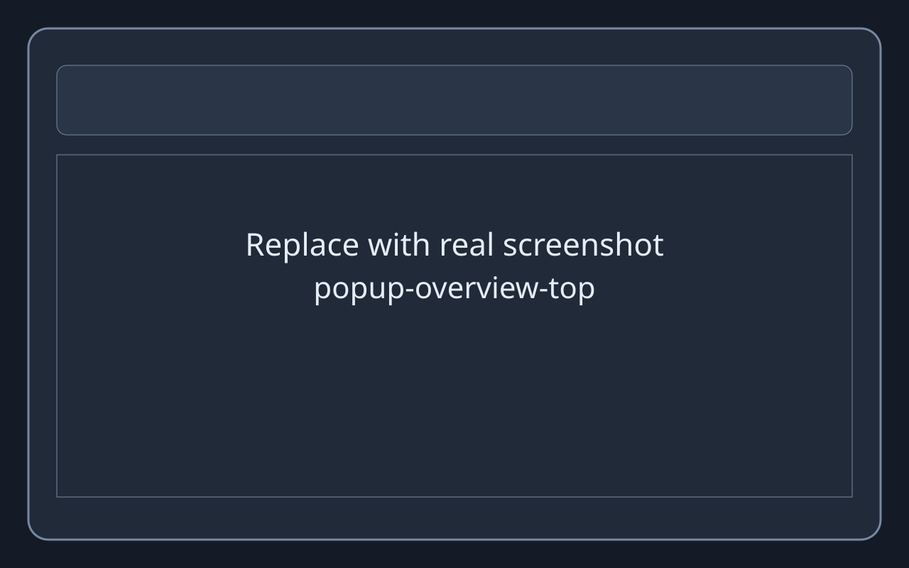
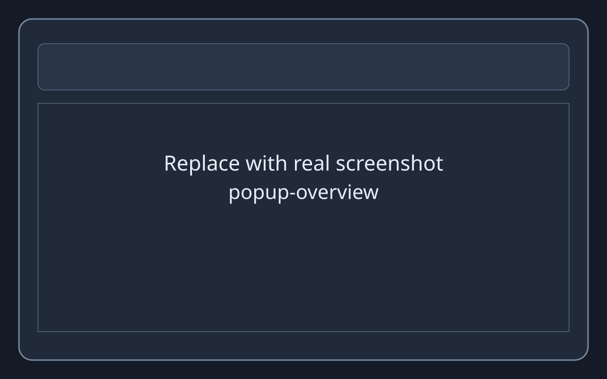
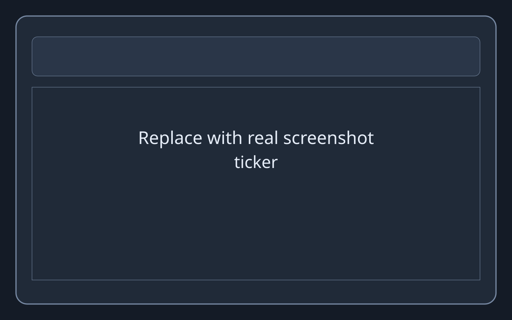
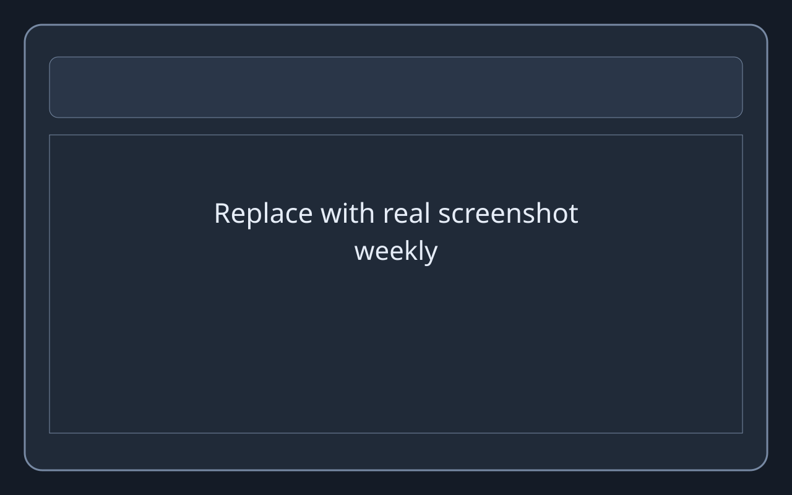

Domain Transparency
See exactly which domains consume your browsing time and visits.
Track visits, time spent, and behavior trends. Stored locally.

See exactly which domains consume your browsing time and visits.
Review trends, switching behavior, and reflection summaries over time.
Everything runs locally with no server dependency or remote analytics.

Daily metrics, session state, and top activity at a glance.

Track short-term movement in domains or categories.

Compare periods, reclaim time, and monitor behavior drift.
Customize presets, goals, language, and focus timers.
Capture domain time and visits during normal browsing sessions.
Convert daily activity into weekly and lifetime behavior trends.
Use goals, focus sessions, and insights to adjust your routine.
chrome.storage.localNo. Data stays local on your device.
No. It tracks domain-level activity, not full page paths.
Yes. Tracking and analytics run offline.
Yes. Export and import JSON are available in settings.